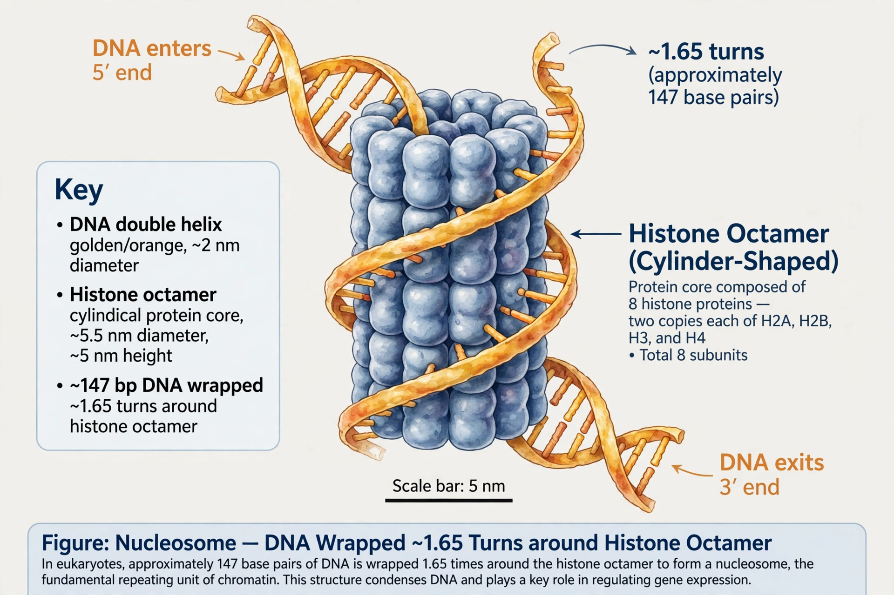

The nucleosome is the basic structural unit of DNA packaging in eukaryotes. It consists of a segment of DNA wound around eight histone proteins, resembling beads on a string. Nucleosomes fold into a 30-nanometre chromatin fibre and ultimately into chromosomes.
The nucleosome core particle comprises approximately 146 base pairs of DNA wrapped about 1.65 times in a left-handed superhelix around a histone octamer: two copies each of the core histones H2A, H2B, H3, and H4. Linker DNA of variable length connects adjacent nucleosomes, and the linker histone H1 binds at the entry and exit points of the DNA, stabilizing higher-order chromatin structure. The crystal structure of the nucleosome core particle was solved at high resolution by Timothy Richmond's group and reported by Karolin Luger and colleagues in 1997.
Nucleosomes compact DNA and regulate access to it: their positioning and chemical modifications — including histone acetylation, methylation, and phosphorylation, collectively termed the histone code — influence gene expression. ATP-dependent chromatin remodelling complexes slide or eject nucleosomes to expose or hide regulatory sequences during transcription, replication, and repair.
See also: Chromatin, Histone, Epigenetics.